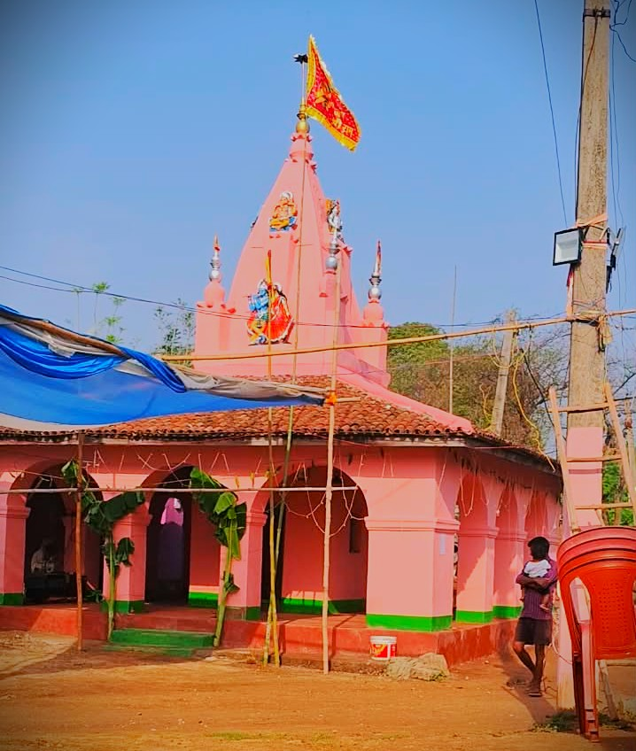

हमारे गाँव की संस्कृति, परंपरा, इतिहास और धार्मिक धरोहर को समर्पित आधिकारिक वेबसाइट।
📸 हरि मंदिर फोटो गैलरी

🏕️ हरि मंदिर / राधा-रानी मंदिर के बारे में
मेरे गाँव में हरि मंदिर, जिसे राधा-रानी मंदिर के नाम से भी जाना जाता है, गाँव के बीचो-बीच स्थित है। यह मंदिर हमारे गाँव के धार्मिक और सांस्कृतिक जीवन का एक महत्वपूर्ण केंद्र है। गाँव के लोगों के लिए यह केवल पूजा करने का स्थान नहीं है, बल्कि आस्था, श्रद्धा, एकता और आपसी भाईचारे का प्रतीक भी है।
मंदिर गाँव के बीच में होने के कारण यहाँ गाँव के लगभग सभी लोग आसानी से पहुँच सकते हैं। सुबह और शाम के समय मंदिर का वातावरण बहुत ही शांत और भक्तिमय हो जाता है। मंदिर में भगवान श्रीकृष्ण और राधा-रानी की पूजा श्रद्धा और भक्ति के साथ की जाती है। गाँव के लोग अपनी सुख-शांति और समृद्धि के लिए भगवान से प्रार्थना करते हैं।
हरि मंदिर में समय-समय पर धार्मिक कार्यक्रम और पूजा-पाठ का आयोजन किया जाता है। विशेष अवसरों और त्योहारों के समय मंदिर की सुंदरता और भी बढ़ जाती है। मंदिर को साफ-सुथरा किया जाता है तथा फूलों और अन्य सजावटी वस्तुओं से सजाया जाता है।
मेरे गाँव के हरि मंदिर में प्रत्येक वर्ष जेठ मास में तीन दिवसीय कीर्तन का आयोजन किया जाता है। यह हमारे गाँव का एक महत्वपूर्ण धार्मिक और सांस्कृतिक आयोजन है। कीर्तन शुरू होने से पहले मंदिर और उसके आसपास के स्थान की विशेष रूप से साफ-सफाई की जाती है तथा मंदिर को फूलों और रोशनी से सजाया जाता है।
इन तीन दिनों में गाँव के बच्चे, युवा, महिलाएँ और बुजुर्ग सभी उत्साह और श्रद्धा के साथ इसमें शामिल होते हैं। मंदिर परिसर में सामूहिक रूप से भजन-कीर्तन किया जाता है। आसपास के गाँवों से भी लोग कीर्तन में शामिल होने के लिए आते हैं। दिन-रात भजन और कीर्तन से पूरा वातावरण भक्तिमय बना रहता है।
कीर्तन के दौरान गाँव के लोग मिल-जुलकर कार्यक्रम की व्यवस्था करते हैं। कोई सजावट में सहयोग करता है, कोई प्रसाद की व्यवस्था करता है और कोई आने वाले लोगों की सेवा में अपना योगदान देता है। तीन दिनों के इस आयोजन के बाद प्रसाद वितरण किया जाता है और सभी लोग श्रद्धा के साथ प्रसाद ग्रहण करते हैं।
यह तीन दिवसीय कीर्तन केवल धार्मिक कार्यक्रम नहीं है, बल्कि गाँव के लोगों को एक-दूसरे के करीब लाने का अवसर भी है। इस आयोजन में सभी वर्ग और आयु के लोग मिलकर भाग लेते हैं। इससे गाँव में आपसी प्रेम, भाईचारा, सहयोग और एकता की भावना मजबूत होती है।
इस प्रकार मेरे गाँव का हरि मंदिर/राधा-रानी मंदिर अपनी सुंदरता, धार्मिक वातावरण और परंपराओं के कारण गाँव के जीवन में विशेष महत्व रखता है। जेठ मास में होने वाला तीन दिवसीय कीर्तन इस मंदिर की सबसे प्रमुख धार्मिक परंपराओं में से एक है, जिसे गाँव के लोग श्रद्धा और उत्साह के साथ हर वर्ष मनाते हैं।
मेरे गाँव का हरि मंदिर केवल धार्मिक स्थल ही नहीं, बल्कि हमारी लोक-संस्कृति और परंपराओं का भी केंद्र है। यहाँ धार्मिक कार्यक्रमों के साथ-साथ गाँव के लोग आपस में मिलते-जुलते हैं और अपने सुख-दुःख की बातें साझा करते हैं। किसी विशेष अवसर पर जब पूरा गाँव मंदिर में एकत्र होता है, तो ऐसा लगता है जैसे पूरा गाँव एक परिवार बन गया हो।
मंदिर की सबसे बड़ी विशेषता यह है कि यह गाँव के बीच में स्थित होने के कारण गाँव के सामाजिक जीवन से गहराई से जुड़ा हुआ है। यहाँ होने वाले कार्यक्रमों में सभी लोग अपनी क्षमता के अनुसार सहयोग करते हैं। कोई सजावट में सहयोग करता है, कोई पूजा की व्यवस्था में और कोई प्रसाद वितरण में। इस प्रकार मंदिर गाँव के लोगों को एक साथ जोड़ने का काम करता है।
मेरे लिए हरि मंदिर/राधा-रानी मंदिर मेरे गाँव की पहचान का एक महत्वपूर्ण हिस्सा है। इससे हमारे गाँव की धार्मिक आस्था, संस्कृति और परंपराएँ जुड़ी हुई हैं। मंदिर में जाने से मन को शांति मिलती है और ईश्वर के प्रति श्रद्धा बढ़ती है। गाँव के लोगों की आस्था और आपसी सहयोग के कारण यह मंदिर हमारे गाँव के जीवन में विशेष स्थान रखता है।
अंततः, मेरे गाँव का हरि मंदिर/राधा-रानी मंदिर केवल ईश्वर की पूजा का स्थान नहीं है, बल्कि श्रद्धा, संस्कृति, एकता और भाईचारे का प्रतीक है। गाँव के बीचो-बीच स्थित यह मंदिर हमारे गाँव की सुंदरता और पहचान को और भी विशेष बनाता है। मुझे अपने गाँव के इस पवित्र मंदिर पर गर्व है।